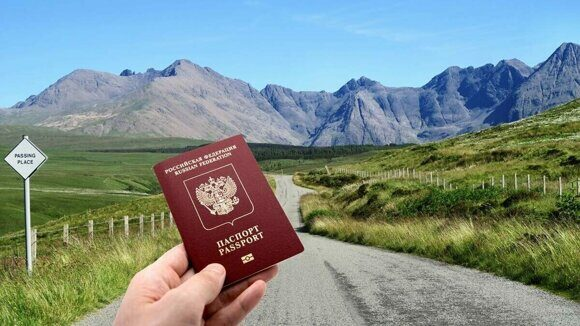
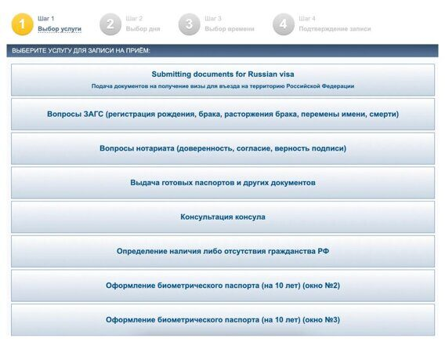
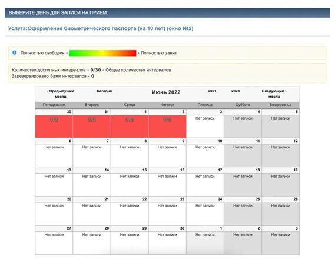
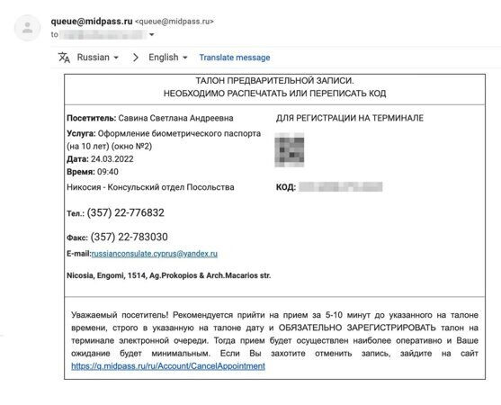
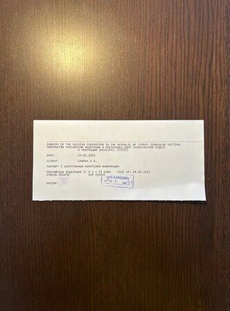
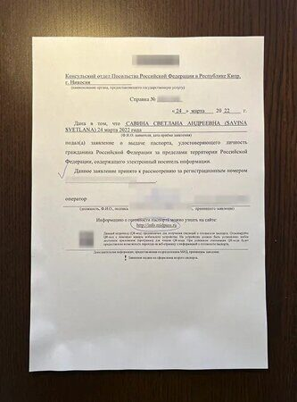

Можно ли получить загранпаспорт за границей?
Вопрос (Валерий): Мне предложили работу за рубежом, помогут оформить ВНЖ. Я планирую задержаться в другой стране на несколько лет, но мой загранпаспорт заканчивается через год. До отъезда я уже не успею получить новый документ.
Скажите, мне придется возвращаться в Россию, чтобы сделать паспорт? Слышал, что россияне за границей сталкиваются с проблемами в оформлении загранпаспорта: якобы его делают почти полгода, а стоит это очень дорого.
Ответ (Света Савина): Россиянин, который живет за рубежом, может оформить загранпаспорт в посольстве или консульстве. Биометрический документ выдают на десять лет, а паспорт без чипа — на пять лет.
Я живу на Кипре и весной 2020 года получила здесь биометрический загранпаспорт для ребенка, а в марте 2022 подала заявление о выдаче паспорта для себя. Расскажу подробнее, как все устроено.

Где получают загранпаспорт за рубежом
Проживающим за границей россиянам загранпаспорта выдают посольства и консульства России. За детей до 18 лет заявления подают их родители или опекуны.
ст. 8 закона «О порядке выезда из РФ и въезда в РФ»
В некоторых странах посольств и консульств России нет. Поэтому иногда, чтобы заменить документ, придется обратиться в посольство в соседнем государстве. Например, из Лихтенштейна поехать в Швейцарию.
На сайте МИД России есть интерактивная карта, которая показывает, в каких странах находятся российские посольства и консульства. Еще контакты представительств опубликованы на Консульском информационном портале.
Туристу, который потерял загранпаспорт за рубежом, в посольстве или консульстве выдадут свидетельство на возвращение в Россию. Мне знакома эта процедура. В 2012 году, когда мы с мужем отдыхали в Испании, у нас украли сумку с документами и деньгами. Нам пришлось обратиться в генеральное консульство России в Барселоне. Там мы получили свидетельства, по которым смогли вернуться домой.
Что делать, если в путешествии украли загранпаспорт
Внутренний российский паспорт в консульстве не меняют. За ним придется ехать в Россию.
Какие документы нужны для оформления паспорта
Список документов не зависит от страны пребывания заявителя. Их перечень определяют регламенты МИД России. Расскажу о требованиях для взрослого заявителя и ребенка.
Перечень документов на Консульском информационном портале
Совершеннолетний гражданин готовит такие документы:
1. Заявление о выдаче паспорта. Для обычного паспорта его заполняют на сайте passportzu.kdmid.ru, для биометрического — на zp.midpass.ru.
2. Загранпаспорт, а если его нет или он просрочен, то действующий внутренний паспорт. Но даже если берете загран, лучше взять с собой и внутренний паспорт: как правило, его спрашивают.
3. Две цветные фотографии 3,5 × 4,5 см. Для биометрического паспорта фотографируют на месте, но могут попросить одну фотографию, чтобы приклеить ее к заявлению.
4. Чек об уплате консульского сбора.
Для заявителя младше 18 лет его представитель обязан предъявить такие документы:
1. Заявление о выдаче паспорта.
2. Загранпаспорт ребенка, если есть.
3. Свидетельство о рождении.
4. Действующий внутренний паспорт для детей старше 14 лет, если у них нет загранпаспорта и свидетельства о рождении. Но внутренний паспорт лучше брать всегда: обычно его спрашивают, даже если есть загран.
5. Загранпаспорт родителя или опекуна или внутренний российский паспорт.
6. Документы, которые подтверждают опекунство, если за паспортом обращается не родитель.
7. Две цветные фотографии ребенка. Их размер — 3,5 × 4,5 см. Для биометрического паспорта фотографируют на месте, но могут попросить одну фотографию, чтобы приклеить ее к заявлению.
8. Чек об уплате консульского сбора.
Заявление о признании загранпаспорта недействительным
Заявление о пересылке документов почтой
Какие еще документы могут потребоваться.
Помимо стандартного пакета документов, и для взрослого, и для ребенка могут потребоваться дополнительные. Например:
1. Заявление об изменении написания имени или фамилии в паспорте. Его подают, к примеру, если меняли фамилию в браке. К заявлению прикладывают подтверждающие документы — свидетельство о заключении брака или перемене имени.
2. Заявление об объявлении недействительным утраченного загранпаспорта, если потеряли документ.
3. Заявление о пересылке документа почтой, если требуется.
Перед подачей заявления я рекомендую сверить список документов с перечнем на сайте посольства или консульства, в которое собираетесь обращаться: требования могут немного отличаться. Например, посольство России на Кипре для оформления паспорта без чипа требует предоставить четыре цветные фотографии, а не две. Еще на прием дополнительно нужно принести копии действующих заграничного и внутреннего паспортов.
Как долго ждать загранпаспорт
По закону биометрический и обычный загранпаспорта в консульстве должны оформить в срок до трех месяцев.
На практике выдачу документа могут задержать. Так было в начале пандемии у моих знакомых на Кипре: они получили биометрические паспорта спустя четыре месяца после подачи заявления.
Но бывает, что документ выдают раньше. В 2018 году в посольстве в Токио моя бывшая коллега оформила паспорт с чипом за полтора месяца. Летом 2019 года знакомая в Мюнхене получила обычный паспорт через два месяца после подачи заявления. Там же моему знакомому осенью 2021 года сделали биометрический паспорт за месяц.
По личному опыту и рассказам знакомых, детям документ оформляют быстрее, чем взрослым. Моему сыну летом 2020 года десятилетний паспорт сделали за три недели. Для пятилетнего документа сроки, как правило, еще короче. Например, весной 2022 года в Германии такой паспорт младенцам оформляли за неделю.
Что, если между странами перестанет ходить диппочта
Посольство России на Кипре печатает на месте только обычные паспорта. Биометрические документы делают в России и доставляют на остров дипломатической почтой. Насколько мне известно, так устроен процесс во многих странах.
Я подала заявление на выдачу биометрического паспорта на Кипре в марте 2022 года, когда небо Европы было закрыто для российских самолетов. В посольстве меня уверили, что оформят паспорт в срок, разве что с небольшой задержкой. Но с какой именно — не уточнили. Уже после визита в посольство я прочитала в кипрском чате, как один человек, который подал заявление в декабре, получил биометрический загранпаспорт в конце марта 2022 года.
Еще из регламента МИД по оформлению и выдаче загранпаспорта я узнала, что законодательством России не предусмотрены основания для приостановки оказания этой услуги. Получается, что из-за прекращения авиасообщения перестать выдавать паспорта не могут.
п. 16 регламента МИД по оформлению и выдаче биометрического паспорта
Сколько стоит оформление паспорта за границей
В России биометрический паспорт для взрослого стоит 3500—5000 Р, обычный — 1400—2000 Р. Паспорт на десять лет для ребенка до 14 лет обойдется в 1750—2500 Р, а на пять лет — в 700—1000 Р. Из-за изменившегося курса валют оформление загранпаспорта за рубежом стоит дороже.
Часто на сайтах посольств тарифы прописаны в местной валюте и в долларах США. Для взрослого — 80 $ (6403 Р) за биометрический паспорт и 30 $ (2401 Р) за документ старого образца. Для ребенка — 40 $ (3202 Р) за десятилетний паспорт и 10 $ (800 Р) за документ на пять лет.
Я посмотрела, во сколько обойдется оформление загранпаспорта для взрослого в апреле 2022 года в разных валютах. Выдача биометрического документа стоит 5904—7991 Р, а обычного — 2206—2997 Р.
Сколько стоит загранпаспорт за рубежом в 2022 году для взрослого
|
Страна |
Биометрический паспорт |
Обычный паспорт |
|
112 AUD (6686 Р) |
42 AUD (2507 Р) |
|
|
40 800 AMD (6927 Р) |
15 300 AMD (2598 Р) |
|
|
440 BRL (7469 Р) |
165 BRL (2801 Р) |
|
|
71 € (6182 Р) |
27 € (2351 Р) |
|
|
112 CAD (7114 Р) |
42 CAD (2668 Р) |
|
|
71 € (6182 Р) |
27 € (2351 Р) |
|
|
80 $ (6403 Р) |
30 $ (2401 Р) |
|
|
8240 RSD (6180 Р) |
3090 RSD (2318 Р) |
|
|
1440 ZAR (7869 Р) |
540 ZAR (2951 Р) |
|
|
9100 JPY (5763 Р) |
3400 JPY (2153 Р) |
Как я получила биометрический загранпаспорт на Кипре
Россияне на острове обращаются за консульскими услугами в посольство России на Кипре. Оно находится в столице республики — Никосии. Я получала здесь загранпаспорт для ребенка и подавала заявление о выдаче паспорта для себя.
Первое, что нужно сделать, — записаться на прием в посольство. Для этого я зарегистрировалась на сайте q.midpass.ru, выбрала услугу, день, время и подтвердила запись. После этого мне на почту пришел талон предварительной записи, который я распечатала и взяла с собой.

Я выбрала оформление биометрического паспорта в окне № 2, можно было пойти и в окно № 3. Насколько я понимаю, в посольстве выделили два окна на одну услугу, чтобы успевать принимать больше посетителей. Источник: q.midpass.ru

29 марта 2022 года не было свободных мест до начала июня, а на июнь запись еще не открыли. Я записывалась 22 января на 17 февраля, но 8 февраля перенесла прием на более удобную для меня дату — 24 марта. Источник: q.midpass.ru

На входе в посольство сотрудник сказал, что без такого талона на прием не пускают
Не позднее чем за три дня до посещения посольства нужно заполнить заявление о выдаче паспорта на сайте zp.midpass.ru. У меня не возникло проблем с этим. Самое сложное — внести данные о трудовой деятельности за последние десять лет. Я подглядывала в трудовую книжку. Заполненное заявление автоматически попадает в базу МИД и посольства. Один экземпляр надо распечатать и взять с собой.
Кроме заявления и талона предварительной записи я взяла с собой загранпаспорт и внутренний паспорт с копиями. Еще подготовила 71 € (6182 Р) наличными. Документы, которые подтверждают пребывание на Кипре, в посольстве не требуют. По желанию можно было предоставить свою цветную или черно-белую фотографию. Я этого не делала.
Я вовремя подошла к нужному окну, предъявила все документы. Сотрудница начала читать мое заявление. Какое-то время я была фрилансером, поэтому так и указала в анкете. В итоге этот пункт в моем заявлении сотрудница посольства дополнила словом «самозанятая». Мне задали еще несколько вопросов, например меняла ли я фамилию.
Далее сотрудница попросила меня проверить правильность написания имени и фамилии латиницей и остальные данные. Потом я пошла фотографироваться в отдельную тесную комнату, где не было места для куртки и документов. В итоге я нервничала и ужасно получилась на фотографии. Спросила, можно ли ее переделать, но мой вопрос сотрудница проигнорировала. Я удивилась, что мне не пришлось сдавать отпечатки пальцев.
После уплаты сбора я отдала чек в то же окно. Мне объяснили, что готовность паспорта нужно проверять на сайте info.midpass.ru. Ее определяют в процентах. Впервые я проверила статус через пять дней после подачи заявления — было 30%. Через полторы недели с момента визита в посольство стало 60%. Когда будет 100%, я снова запишусь на прием в посольство, чтобы забрать готовый паспорт. На выдаче документа нужно присутствовать лично, в том числе детям.

Квитанция об уплате

Справка о подаче заявления на выдачу паспорта
На этой странице я отслеживаю готовность паспорта. Источник: info.midpass.ru
Источник: 15.04.2022 https://journal.tinkoff.ru/zagran-zagran/